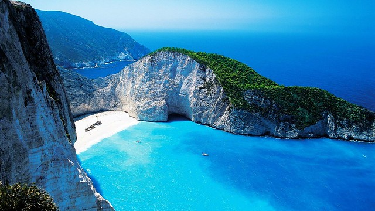

⛏I built a base in the sea to avoid mobs.
モブを避けるために海に拠点を建てました。
/aɪ ˈbɪlt ə ˈbeɪs ɪn ðə ˈsiː tə əˈvɔɪd ˈmɑbz/
- built a → /t/ が /ə/ に連結して [bɪltə] ビルタ
アイ・ビルタ・ベイス・イン・ザ・シー・タ・アヴォイッ・モブズ

⛏I built a base in the sea to avoid mobs.
モブを避けるために海に拠点を建てました。
⛏We searched the sea floor for treasure.
宝物を求めて海底を探索しました。
⛏This sea is shallow enough to build underwater.
この海は浅いので水中に建築できます。
⛏We sailed out to sea looking for treasure.
宝物を探すために海沖へ船を出しました。
⛏Caves often generate near sea level.
洞穴はよく海面付近で生成されます。